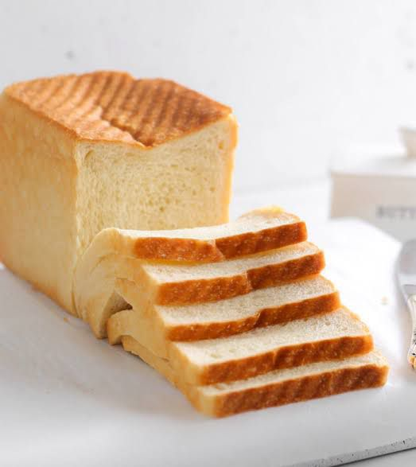
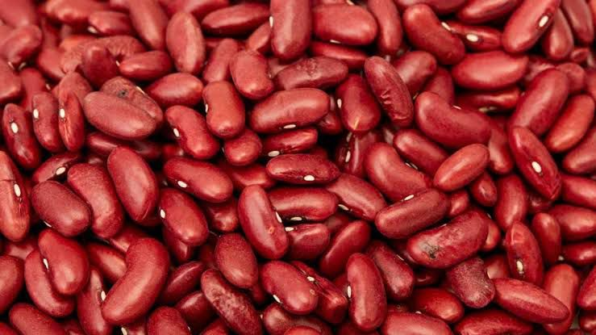
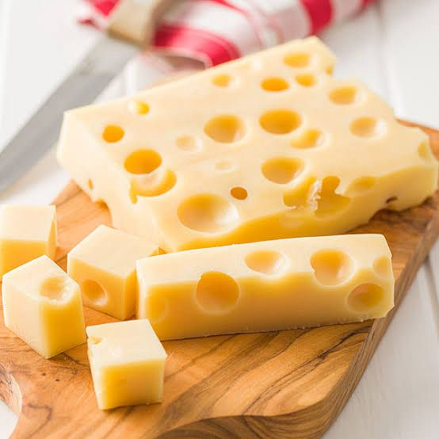
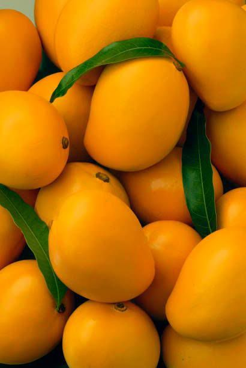
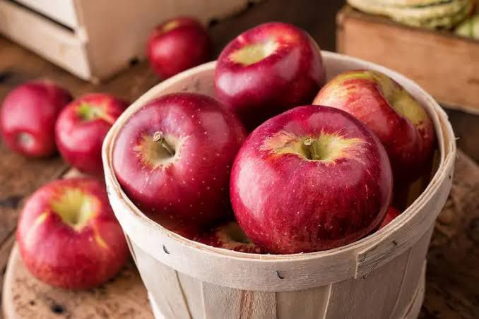
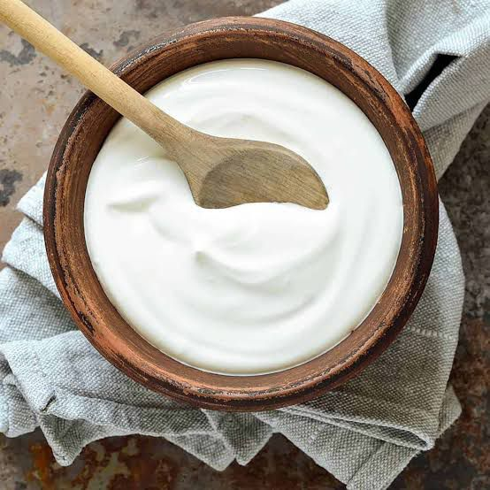
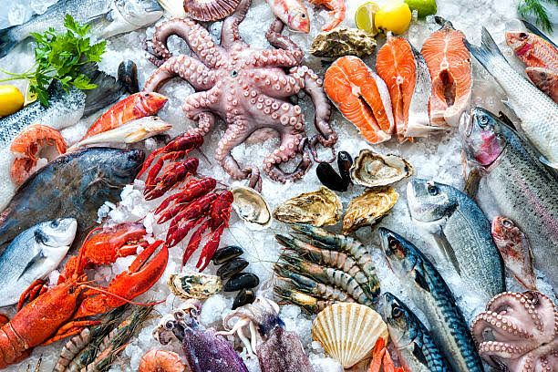

Carbohydrate
Carbohydrates give the body energy for daily activities. They are one of the most important food classes needed for growth.
- Rice
- Bread
- Yam
- Potato
- Pasta


Carbohydrates give the body energy for daily activities. They are one of the most important food classes needed for growth.

Proteins help in body building and tissue repair. They are essential for strong muscles and healthy growth.


Fat provides stored energy and keeps the body warm. Too much fat, however, can be harmful to health.


Vitamins protect the body from diseases and improve immunity. Fruits and vegetables are rich sources of vitamins.



Minerals help in forming strong bones and teeth. They also help the body function properly.



Water is essential for survival and proper body functioning. It helps regulate body temperature and transport nutrients.